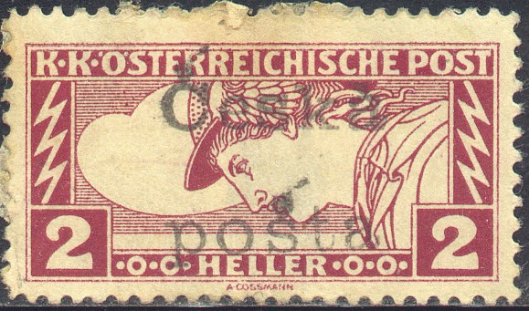
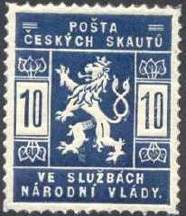

Ceskoslovenska - Tchéco-Slovaquie - Czechoslowakei
Return To Catalogue - Czechoslovakia, regular issues
Note: on my website many of the
pictures can not be seen! They are of course present in the
catalogue;
contact me if you want to purchase it.

I have seen the same stamp, with the same overprint, same cancel
with same date and city name on an almost identical piece of
paper.
ATTENTION: these stamps were primarily issued for stamp collectors, they were only used during a very short period!
3 h violet 5 h green 6 h orange (blue overprint) 10 h red 12 h blue 15 h brown 20 h green 25 h blue 30 h violet 40 h olive 50 h green 60 h blue 80 h brown 90 h lilac 1 K red on yellow (blue overprint) 2 K bleu 3 K red 4 K green 10 K violet
Value of the stamps |
|||
vc = very common c = common * = not so common ** = uncommon |
*** = very uncommon R = rare RR = very rare RRR = extremely rare |
||
| Value | Unused | Used | Remarks |
| 3 h | c | c | |
| 5 h | c | c | |
| 6 h | c | c | With black overprint: RRR |
| 10 h | * | * | |
| 12 h | c | c | |
| 15 h | c | c | |
| 20 h | c | c | |
| 25 h | c | c | |
| 30 h | c | c | |
| 40 h | c | * | |
| 50 h | c | * | |
| 60 h | c | * | |
| 80 h | c | * | |
| 90 h | * | * | |
| 1 K | * | * | With black overprint: R |
| 2 K | ** | ** | |
| 3 K | *** | *** | |
| 4 K | *** | *** | |
| 10 K | RR | RR | |
Overprint on newspaper stamps of Austria (1908 or 1916 issue)

10 h red (1908 type of Austria) 2 h brown (perforated or imperforated) 4 h green 6 h blue 10 h orange 30 h red
Value of the stamps |
|||
vc = very common c = common * = not so common ** = uncommon |
*** = very uncommon R = rare RR = very rare RRR = extremely rare |
||
| Value | Unused | Used | Remarks |
| 10 h | RR | RR | 1908 type of Austria |
| 2 h | c | c | |
| 4 h | c | c | |
| 6 h | c | c | |
| 10 h | * | * | |
| 30 h | * | * | |
Overprint on express stamps of Austria


2 h red on yellow (triangular stamp) 5 h green on yellow (triangular stamp) 2 h red on yellow (overprint exists in blue or black) 5 h green on yellow
Value of the stamps |
|||
vc = very common c = common * = not so common ** = uncommon |
*** = very uncommon R = rare RR = very rare RRR = extremely rare |
||
| Value | Unused | Used | Remarks |
| 2 h | *** | *** | Triangular stamp |
| 5 h | RR | RR | Triangular stamp |
| 2 h | c | c | Exists with black overprint: *** |
| 5 h | c | c | |
Overprint on airmail stamps of Austria
Genuine overprint
1.50 K violet 2.50 K yellow 4 K grey
Value of the stamps |
|||
vc = very common c = common * = not so common ** = uncommon |
*** = very uncommon R = rare RR = very rare RRR = extremely rare |
||
| Value | Unused | Used | Remarks |
| 1.50 K | RR | RR | |
| 2.50 K | RR | RR | |
| 4 K | RR | RR | |
Overprint on postage due stamps of Austria (various types)

1 h grey 2 h red 4 h red 5 h red 6 h red 10 h red 14 h red 15 h red 20 h red 25 h red 25 h red (other type) 30 h red 30 h red (other type) 40 h red 50 h red 50 h red (other type) 1 K blue 5 K blue 10 K blue 10 on 24 h blue 15 on 2 h violet 15 on 36 h violet 20 on 54 h orange 50 on 42 h brown
Value of the stamps |
|||
vc = very common c = common * = not so common ** = uncommon |
*** = very uncommon R = rare RR = very rare RRR = extremely rare |
||
| Value | Unused | Used | Remarks |
| 1 h | *** | *** | |
| 2 h | RRR | RRR | |
| 4 h | *** | *** | |
| 5 h | c | c | |
| 6 h | * | * | |
| 10 h | c | c | |
| 14 h | R | R | |
| 15 h | c | c | |
| 20 h | * | * | |
| 25 h | *** | *** | 1908 type of Austria |
| 25 h | * | * | 1916 type of Austria |
| 30 h | RR | RR | 1908 type of Austria |
| 30 h | * | * | 1916 type of Austria |
| 40 h | * | * | |
| 50 h | RR | RR | 1908 type of Austria |
| 50 h | RR | RR | 1916 type of Austria |
| 1 K | ** | ** | |
| 5 K | *** | *** | |
| 10 K | RR | RR | |
| 10 on 24 h | RR | RR | |
| 15 on 2 h | R | R | |
| 15 on 36 h | c | c | |
| 20 on 54 h | R | R | |
| 50 on 42 h | * | * | |
Many forged overprints exist. Other non official overprints also exist, examples:

('Ceska posta' and 'DOPLATIT' on stamps of Austria)
(Lion and 'CESKO SLOVENSKO STAT' on stamp of Austria)
('CESKO SLOVENKY STAT' and lion on 15 h postage due stamp of
Austria)
Bird
1 f black 2 f yellow 3 f orange 6 f olive 50 f red on blue 60 f green on red 70 f brown on green
Value of the stamps |
|||
vc = very common c = common * = not so common ** = uncommon |
*** = very uncommon R = rare RR = very rare RRR = extremely rare |
||
| Value | Unused | Used | Remarks |
| 1 f | RRR | RRR | |
| 2 f | * | * | |
| 3 f | *** | *** | |
| 6 f | * | * | |
| 50 f | * | * | |
| 60 f | *** | *** | |
| 70 f | RRR | RRR | |
War issue 10 + 2 f red 15 + 2 f violet 40 + 2 f red
Value of the stamps |
|||
vc = very common c = common * = not so common ** = uncommon |
*** = very uncommon R = rare RR = very rare RRR = extremely rare |
||
| Value | Unused | Used | Remarks |
| 10 + 2 f | * | * | |
| 15 + 2 f | * | * | |
| 40 + 2 f | * | * | |
Harvester
2 f brown 3 f lilac 5 f green 6 f blue 10 f red (value coloured on white background) 10 f red (value white on coloured background) 10 f red (inscription MAGYAR POSTA) 15 f violet (value coloured on white background) 15 f violet (value white on coloured background) 20 f brown (inscription MAGYAR KIR POSTA) 20 f brown (inscription MAGYAR POSTA) 25 f blue 35 f brown 40 f olive
Value of the stamps |
|||
vc = very common c = common * = not so common ** = uncommon |
*** = very uncommon R = rare RR = very rare RRR = extremely rare |
||
| Value | Unused | Used | Remarks |
| 2 f | c | c | |
| 3 f | c | c | |
| 5 f | c | c | |
| 6 f | c | c | |
| 10 f | * | * | value red |
| 10 f | RR | RR | value white |
| 10 f | ** | ** | 'Magyar Posta' |
| 15 f | c | c | value violet |
| 15 f | RR | RR | value white |
| 20 f | * | * | 'Magyar Kir Posta' |
| 20 f | RRR | RRR | 'Magyar Posta' |
| 25 f | * | * | |
| 35 f | * | * | |
| 40 f | * | * | |
Parlement
50 f lilac 75 f blue 80 f green 1 K red 2 K brown 3 K violet and grey 5 K brown 10 K brown and lilac
Value of the stamps |
|||
vc = very common c = common * = not so common ** = uncommon |
*** = very uncommon R = rare RR = very rare RRR = extremely rare |
||
| Value | Unused | Used | Remarks |
| 50 f | ** | ** | |
| 75 f | ** | ** | |
| 80 f | ** | ** | |
| 1 K | ** | ** | |
| 2 K | *** | *** | |
| 3 K | *** | *** | |
| 5 K | R | R | |
| 10 K | RR | RR | |
King Charles
10 f red 20 f brown 25 f blue
Value of the stamps |
|||
vc = very common c = common * = not so common ** = uncommon |
*** = very uncommon R = rare RR = very rare RRR = extremely rare |
||
| Value | Unused | Used | Remarks |
| 10 f | c | c | |
| 20 f | c | c | |
| 25 f | * | * | |
Queen Zita
40 f olive 50 f lilac
Value of the stamps |
|||
vc = very common c = common * = not so common ** = uncommon |
*** = very uncommon R = rare RR = very rare RRR = extremely rare |
||
| Value | Unused | Used | Remarks |
| 40 f | * | * | |
| 50 f | *** | *** | |
Newspaper stamp 2 f red
Value of the stamps |
|||
vc = very common c = common * = not so common ** = uncommon |
*** = very uncommon R = rare RR = very rare RRR = extremely rare |
||
| Value | Unused | Used | Remarks |
| 2 f | c | c | |
Express stamp 2 f olive and red
Value of the stamps |
|||
vc = very common c = common * = not so common ** = uncommon |
*** = very uncommon R = rare RR = very rare RRR = extremely rare |
||
| Value | Unused | Used | Remarks |
| 2 f | c | c | |
Postage due stamps

(Genuine 5 f; very rare stamp, only 250 printed!)
1 f green and black 1 f green and red 2 f green and black 2 f green and red 5 f green and black 5 f green and red 6 f green and red 10 f green and red 12 f green and black 12 f green and red 20 f green and red 30 f green and red 50 f green and black
The basic stamps have watermark 'Cross' (most common) or 'Crown' (RR to RRR).
Value of the stamps |
|||
vc = very common c = common * = not so common ** = uncommon |
*** = very uncommon R = rare RR = very rare RRR = extremely rare |
||
| Value | Unused | Used | Remarks |
| 1 f green and black | RRR | RRR | |
| 1 f green and red | RR | RR | |
| 2 f green and black | RR | RR | |
| 2 f green and red | * | * | |
| 5 f green and black | RRR | RRR | |
| 5 f green and red | *** | *** | |
| 6 f | * | * | |
| 10 f | c | c | |
| 12 f green and black | RRR | RRR | |
| 12 f green and red | * | * | |
| 15 f | ** | ** | |
| 20 f | * | * | |
| 30 f | *** | *** | |
| 50 f | RR | RR | |
Forged overprints exist, example:

A 20 h orange also exists. These stamps were issued on November 7 1918, and are also known as Scout Stamps. When Czechoslovakia first became a nation they had no postal carriers and used Buy Scouts to deliver the mail. These stamps were used for a very short time. Mint stamps can be found much more often than used stamps (beware of philatelic used stamps!). Used stamps have a special postmark: a roman style "N.V." in a CDS. There are excellent forgeries known of these stamps, if I'm well informed they differ in the crown on top of the lion's head.
Overprints on Czech stamps after the occupation of Sudetenland by Germany (1939), overprint reads 'Wir sind frei' (we are free):

(Reduced size, genuine stamp)
Be aware, many forgeries exist!


{kind=link}
{kind=link}
{kind=link}
{kind=link}